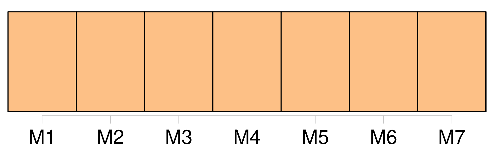
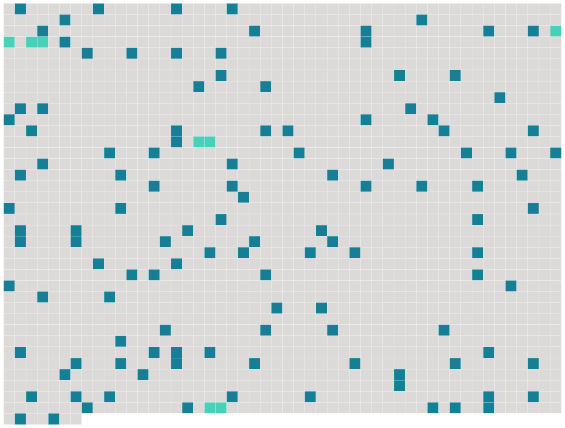

Longueur nb maillons : 125 mentions |
  |
Suis [-je] fou?? [1 phrases] [Je] n'en sais rien, mais [j'] ai souffert horriblement.
[J'] ai accompli un acte de folie, de folie furieuse, c'est vrai ; mais la jalousie haletante, mais l'amour exalté, trahi, condamné, mais la douleur abominable que [j'] endure, tout cela ne suffit -il pas pour nous faire commettre des crimes et des folies sans être vraiment criminel par le coeur ou par le cerveau? [1 phrases] [j'] ai souffert, souffert, souffert d'une façon continue, aiguë, épouvantable. [J'] ai aimé cette femme d'un élan frénétique... [1 phrases] L'ai [-je] aimée?? [1 phrases] Elle [m'] a possédé âme et corps, envahi, lié. [J'] ai été, [je] suis [sa chose] , [son jouet]
[J'] appartiens à son sourire, à sa bouche, à son regard, aux lignes de son corps, à la forme de son visage ; [je] halète sous la domination de son apparence extérieure ; mais Elle, la femme de tout cela, l'être de ce corps, [je] la hais, [je] la méprise, [je] l'exècre, [je] l'ai toujours haïe, méprisée, exécrée ; car elle est perfide, bestiale, immonde, impure ; elle est XXXla femme de perditionXXX, l'animal sensuel et faux chez qui l'âme n'est point, chez qui la pensée ne circule jamais comme un air libre et vivifiant ; elle est la bête humaine ; moins que cela : elle n'est qu'un flanc, une merveille de chair douce et ronde qu'habite l'Infamie. [1 phrases] Entre ses bras toujours ouvert [je] m'épuisais dans une rage d'inassouvissable désir. Ses yeux, comme s'ils [m'] eussent donné soif, [me] faisaient ouvrir la bouche. [1 phrases]
[Je] ne suis pas fou : [je] jura qu'ils avaient ces trois, couleurs. [1 phrases]
Ses lèvres, remuées d'un tremblement, laissaient jaillir parfois la pointe rosé et mouillée de sa langue, qui palpitait comme celle d'un reptile ; et ses paupières lourdes se relevaient lentement, découvrant ce regard ardent et anéanti qui [m'] affolait.
En l'étreignant dans [mes] bras [je] regardais son oeil et je frémissais, secoué tout autant par le besoin de tuer cette bête que par la nécessité de la posséder sans cesse.
Quand elle marchait à travers [ma] chambre, le bruit de chacun de ses pas faisait une commotion dans [mon] coeur ; et quand elle commençait à se dévêtir, laissait tomber sa robe, et sortant, infâme et radieuse, du linge qui s'écrasait autour d'elle, [je] sentais tout le long de [mes] membres, le long des bras, le long des jambes, dans [ma] poitrine essoufflée, une défaillance infinie et lâche. Un jour, [je] m'aperçus qu'elle était lasse de [moi] [Je] le vis dans son oeil, au réveil. Penché sur elle, [j'] attendais chaque matin ce premier regard. [Je] l'attendais, plein de rage, de haine, de mépris pour cette brute endormie dont [j'] étais [l'esclave] Mais quand le bleu pâle de sa prunelle, ce bleu liquide comme de l'eau, se découvrait, encore languissant, encore fatigué, encore malade des récentes caresses, c'était comme une flamme rapide qui [me] brûlait, exaspérant [mes] ardeurs.
Ce jour -là, quand s'ouvrit sa paupière, [j'] aperçus un regard indifférent et morne qui ne désirait plus rien. [1 phrases] [je] le vis, [je] le sus, [je] le sentis, [je] le compris tout de suite. [1 phrases]
Et [j'] en eus la preuve à chaque heure, à chaque seconde. Quand [je] l'appelais des bras et des lèvres, elle se retournait ennuyée, murmurant : « [Laissez] -moi donc!! » ou bien : « [Vous] êtes odieux. [1 phrases]
»
[Je] savais bien qu'elle recommencerait bientôt, qu'un autre viendrait pour rallumer ses sens.
[Je] fus jaloux avec frénésie ; mais [je] ne suis pas fou ; non, certes, non. [J'] attendis ; oh!! [j'] épiais ; elle ne [m'] aurait pas trompé ; mais elle restait froide, endormie. [2 phrases] Alors [je] fus jaloux d'elle -même ; jaloux de son indifférence, jaloux de la solitude de ses nuits ; jaloux de ses gestes, de sa pensée que [je] sentais toujours infâme, jaloux de tout ce que [je] devinais.
Et quand elle avait parfois, à son lever, ce regard mou qui suivait jadis nos nuits ardentes, comme si quelque concupiscence avait hanté son âme et remué ses désirs, il [me] venait des suffocations de colère, des tremblements d'indignation, des démangeaisons de l'étrangler, de l'abattre sous [mon] genou et de lui faire avouer, en lui serrant la gorge, tous les secrets honteux de son coeur. Suis [-je] fou?? [1 phrases] Voilà qu'un soir [je] la sentis heureuse. [Je] sentis qu'une passion nouvelle vivait en elle. [J'] en étais sûr, indubitablement sûr.
Elle palpitait comme après [mes] étreintes ; son oeil flambait, ses mains étaient chaudes, toute sa personne vibrante dégageait cette vapeur d'amour d'où [mon] affolement était venu.
[Je] feignis de ne rien comprendre, mais [mon] attention l'enveloppait comme un filet.
[Je] ne découvrais rien, pourtant. [J'] attendis une semaine, un mois, une saison. [1 phrases] Et, tout à coup, [je] devinai!! [Je] ne suis pas fou.
[Je] le jure, [je] ne suis pas fou! [1 phrases] Comment [me] faire comprendre?? [1 phrases]
Voici de quelle manière [je] fus averti. Un soir, [je] vous l'ai dit, un soir, comme elle rentrait d'une longue promenade à cheval, elle tomba, les pommettes rouges, la poitrine battante, les jambes cassées, les yeux meurtris, sur une chaise basse, en face de [moi] [Je] l'avais vue comme cela!! [1 phrases]
[Je] ne pouvais m'y tromper!
Alors, perdant la tête, pour ne plus la contempler, [je] me tournai vers la fenêtre, et [j'] aperçus un valet emmenant par la bride vers l'écurie son grand cheval, qui se cabrait. [2 phrases] [Je] songeai toute la nuit ; et il [me] sembla pénétrer des mystères que [je] n'avais jamais soupçonnés. [3 phrases] [J'] avais compris!!
[j'] étais jaloux maintenant du cheval nerveux et galopant ; jaloux du vent qui caressait son visage quand elle allait d'une course folle ; jaloux des feuilles qui baisaient, en passant, ses oreilles ; des gouttes de soleil qui lui tombaient sur le front à travers les branches ; jaloux de la selle qui la portait et qu'elle étreignait de sa cuisse.
C'était tout cela qui la faisait heureuse, qui l'exaltait, l'assouvissait, l'épuisait et [me] la rendait ensuite insensible et presque pâmée. [Je] résolus de me venger. [Je] fus doux et plein d'attentions pour elle. [Je] lui tendais la main quand elle allait sauter à terre après ses courses effrénées.
L'animal furieux ruait vers [moi] ; elle le flattait sur son cou recourbé, l'embrassait sur ses naseaux frémissants sans essuyer ensuite ses lèvres ; et le parfum de son corps, en sueur comme après la tiédeur du lit, se mêlait sous [ma] narine à l'odeur âcre et fauve de la bête. [J'] attendis [mon] jour et [mon] heure. [1 phrases]
[Je] sortis avant l'aurore, avec une corde dans la main et [mes] pistolets cachés sur [ma] poitrine, comme si [j'] allais me battre en duel.
[Je] courus vers le chemin qu'elle aimait ; [je] tendis la corde entre deux arbres ; puis [je] me cachai dans les herbes. [J'] avais l'oreille contre le sol ; [j'] entendis son galop lointain ; puis [je] l'aperçus là-bas, sous les feuilles comme au bout d'une voûte, arrivant à fond de train. [1 phrases] [je] ne m'étais pas trompé, c'était cela!! [1 phrases]
L'animal heurta [mon] piège des deux jambes de devant, et roula, les os cassés. [1 phrases] [je] la reçus dans [mes] bras. [Je] suis fort à porter un boeuf. Puis, quand [je] l'eus déposée à terre, [je] m'approchai de Lui qui nous regardait ; alors, pendant qu'il essayait de [me] mordre encore, [je] lui mis un pistolet dans l'oreille... et [je] le tuai... [1 phrases]
Mais [je] tombai [moi -même] , la figure coupée par deux coups de cravache : et comme elle se ruait de nouveau sur [moi] , [je] lui tirai [mon] autre balle dans le ventre.
Dites [-moi] , suis [-je] fou? |
 |
La ressource peut être téléchargée sur la page Ortolang
Si vous avez des questions ou vous voyez des erreurs, merci d'envoyer un mail à silvia.federzoni89@gmail.com
Site développé par S. Federzoni (contact)